4 + 3 ^ 2[1] 138 * (9 + 4)[1] 104Suppose a district treasury sends us its bill register as an Excel file. We add up the amounts, and R says the total is NA. Or it refuses to add at all, because the amounts are “text”. Or the bank account numbers no longer match the vendor master, because their leading zeros have gone. None of these is an error in the treasury’s accounts. Each is a problem of data types, and each can make an audit check give a wrong answer without any warning.
In this chapter we learn the building blocks of R. We learn how to calculate, how to store values in objects, the basic types of data, and the structures which hold them, from a single number to a full table. These may look elementary, but many errors in audit analysis start exactly here. We point out these traps as we go. At the end, an audit use case puts them together on a small bill register.
To start learning R, type a calculation at the command prompt > and press Enter. So, 3+4 gives the result 7. Common mathematical operators are listed in Table 1.1.
Table: Common Mathematical Operators in R {#tbl-table3}
| Operator/ function | Meaning | Example |
|---|---|---|
+ |
Addition |
4 + 5 is 9
|
- |
Subtraction |
4 - 5 is -1
|
* |
Multiplication |
4 * 5 is 20
|
/ |
Division |
4/5 is 0.8
|
^ |
Exponent |
2^4 is 16
|
%% |
Modulus (Remainder from division) |
15 %% 12 is 3
|
%/% |
Integer Division |
15 %/% 12 is 1
|
A few examples of calculations in R follow.
4 + 3 ^ 2[1] 138 * (9 + 4)[1] 104The same operators answer everyday audit questions. What is a bill of ₹84,000 with 18% GST added? How much is ₹3,45,67,890 in lakh? Is an amount a round sum of thousands, with nothing left over on division by 1,000? How many full lakh are there in ₹2,75,000?
84000 * 1.18 # bill amount with 18% GST[1] 9912034567890 / 1e5 # the amount in lakh (1e5 is 1,00,000)[1] 345.678948000 %% 1000 # remainder 0, so a round sum of thousands[1] 048250 %% 1000 # remainder 250, not a round sum[1] 250275000 %/% 1e5 # number of full lakh[1] 2Round sums are worth a look in audit, because genuine bills rarely come out to exact thousands. We will use %% in this way in later chapters.
R follows the usual mathematical order of precedence while evaluating expressions. It can be changed with parentheses (). Curly braces {} and square brackets [] have other meanings in R, so only () may be used to change the order of operations, even when nested.
R is an object-oriented language.1 This means that objects are created and stored in the R environment, so that they can be used later.
So what is an object? It can be as simple as a single number stored under a name. Suppose we have to greet each user by name, prefixing hello to it. Once the user’s name is stored in an object, we can use it again and again by calling the object’s name, instead of asking for the name every time. In the same way, once the sanctioned amount of a work is stored under a name, every later check can refer to it. An object can also be a whole data set, the output of a model, or a function. So an object in R can hold many values.
Objects are created with the assignment operator <-. Read it as “the name on the left gets the value on the right”. The equals sign = also works in most cases, but <- is the convention in R, and we will use it throughout. The arrow can point the other way too, value -> name, though this is rarely used. The keyboard shortcut for <- in RStudio is Alt + -.
# user name
user_name <- 'Anil Goyal'
# when the above variable is called
user_name[1] "Anil Goyal"# sanctioned amount of a work, and the amount paid so far
sanctioned <- 2500000
paid <- 2740000
paid - sanctioned # excess over the sanction[1] 240000Names of all objects in R are case sensitive, so user, USER and useR are three different objects.
Names may contain letters, numbers, . and _, but must start with a letter (or a dot not followed by a number). Spaces are not allowed. A good habit is to use lower case words joined by underscores, like vendor_master or bills_2024_25, which says what the object holds.
We have seen that objects store values, and objects can even contain other objects. So what are the most basic, or atomic, types of data in R, which cannot be split any further? Think of a single value, like a user’s name or age. Such a value can be of six types.
TRUE or FALSE)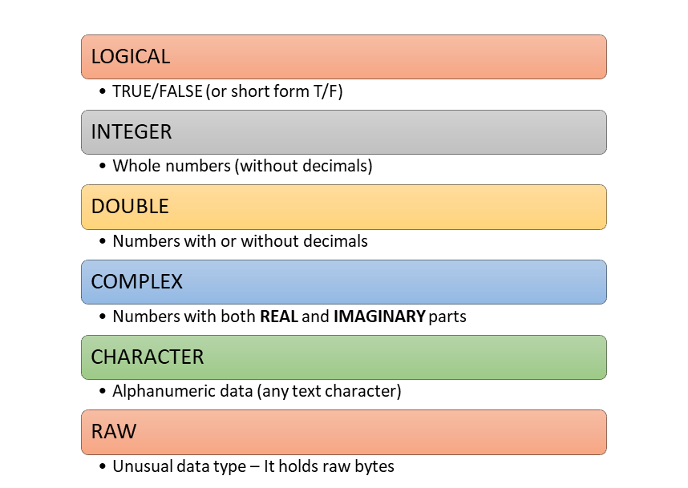
Let us discuss all of these.
In R, logical values are either TRUE or FALSE (all in capitals). They are the result of every comparison, like amount > 50000, and so they are at the heart of every audit test which picks out exceptions.
TRUE[1] TRUEtypeof(TRUE)[1] "logical"my_val <- TRUE
typeof(my_val)[1] "logical"bill_amount <- 62000
bill_amount > 50000 # does the bill need higher sanction?[1] TRUENA. There is one special logical value, NA (short for Not Available). It is used for missing data. Any calculation with a missing value gives a missing result, because R cannot know the answer. Most summary functions have an argument na.rm = TRUE to leave out the missing values.
Remember, missing data is not an empty string. The difference between the two is explained in Section 1.3.4.
A total which comes out as NA is a warning sign, not a nuisance to be silenced with na.rm = TRUE. Find out first which values are missing and why. A bill without an amount may itself be an audit finding.
Numeric values can either be integers, without a decimal part, or numbers with decimals, called double in R. Integers are written with a suffix L, as in the number of vouchers below.
Numbers with decimals are stored as type double. Keep in mind that a whole number typed without the suffix L is also stored as double, as the example above showed. In practice this rarely matters, because R converts between the two as needed.
Doubles can also be written in exponential (scientific) or hexadecimal form.
my_val2 <- 1250.75 # an amount in rupees and paise
my_val3 <- 1.23e4 # 1.23 x 10^4, that is, 12,300
my_val4 <- 0xcafe # hexadecimal format (prefixed by 0x)
typeof(my_val2)[1] "double"typeof(my_val3)[1] "double"typeof(my_val4)[1] "double"Suffix L may also be used with numerals in hexadecimal form, like 0xcafeL, or exponential form, like 1.23e4L. This makes them integer.
typeof(0xcafeL)[1] "integer"So integer and double may be thought of as two sub-types of numeric data. There are three special doubles, Inf, -Inf and NaN. The first two are positive and negative infinity, and the last stands for an indefinite result (NaN is short for Not a Number).
1/0[1] Inf-45/0[1] -Inf0/0[1] NaN500000 / 0 # expenditure per beneficiary, with no beneficiaries[1] InfIn audit data these usually appear when a ratio is computed with a zero in the denominator, like expenditure per beneficiary for a scheme with no beneficiaries. They should be looked at, not averaged.
Decimals are not always exact. Computers store doubles in binary, and many decimal fractions, like 0.1, cannot be stored exactly. The tiny differences are invisible when printed, but they can make a comparison fail.
When matching amounts, say a bill total against the sum of its items, do not compare computed decimals with ==. Round both to paise with round(x, 2), or allow a small tolerance, like abs(x - y) < 0.005. Otherwise genuine matches may be reported as mismatches.
Large numbers and identifiers. Integers in R are limited to about 2.1 billion (.Machine$integer.max is 2147483647). Doubles can hold much bigger numbers, but are exact only up to about 9 thousand million million (\(2^{53}\)). A 16-digit number, like a card number, may be beyond that, and then gets changed silently.
card <- as.numeric("9876543210987657")
sprintf("%.0f", card)[1] "9876543210987656"The last digit has changed from 7 to 6, without any warning.
Keep identifiers, like account numbers, Aadhaar, PAN, mobile numbers, PIN codes and card numbers, as character, never as numbers. As numbers they lose leading zeros ("001234" becomes 1234), and long ones may change, as we just saw. We never do arithmetic on them anyway. When reading files, we will see how to tell R to read such columns as text.
Strings (text) are stored in R as type character. They are enclosed in single quotes '' or double quotes ""2.
my_val5 <- 'Anil Goyal'
my_val6 <- "ABCPK1234Q" # a PAN is text, not a number
my_val7 <- "" # empty string
my_missing_val <- NA # missing value
typeof(my_val5)[1] "character"typeof(my_val6)[1] "character"typeof(my_val7)[1] "character"typeof(my_missing_val)[1] "logical"NA is of type logical, it is used to store missing values in every other type too, as we will see in later chapters.\, like \n for a new line. Type ?Quotes in the console for the full list." or ' inside a string. See the third example below.A single quote can sit inside double quotes, as in a vendor’s name.
my_val8 <- "Sharma's Enterprises"
my_val8[1] "Sharma's Enterprises"The escape character \n starts a new line.
cat("Office: DTO Jaipur\nVoucher: 245")Office: DTO Jaipur
Voucher: 245The escape character also stores the quotes themselves as text.
cat("\' is single quote and \" is double quote")' is single quote and " is double quoteThe output above has no [1] at the start. The reason is explained with the cat() function in Section 4.12.11.
NULL (all capitals) stands for nothing, an empty object. Assigning NULL to an object empties it. Unlike NA, which is a missing value that takes up a place, NULL has length zero.
Complex numbers have real and imaginary parts. As we will not use them in data analysis, we do not discuss them further.
my_complex_no <- 1+1i
typeof(my_complex_no)[1] "complex"Objects in R can be either homogeneous or heterogeneous.
What is a vector? A vector is simply a collection of values of the same type.
The vector is the most basic structure in R, yet it can hold many values of the same type at once. You may have noticed a [1] at the start of every output so far. It is the position (index) of the first value printed on that line. In R there are no single values, or scalars, as such. A single value is just a vector of length one. When a long vector is printed, each new line starts with the index of its first value.
Working on all the values of a vector at once, without writing loops, is one of the great strengths of R. To add 18% GST to a thousand bill amounts, we simply write amounts * 1.18. The three objects shown in the figure below are all vectors.
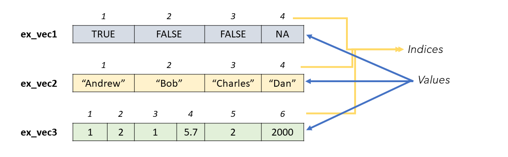
How do we create a vector? There are two ways.
c(), the shortest and most commonly used function in R. It combines the values given to it, separated by commas.vector(), which creates an empty vector of a given mode and length, to be filled later.my_vector <- c(1, 2, 3)
my_vector[1] 1 2 3bill_amounts <- c(45000, 128000, 9500, 62000) # four bills
bill_amounts * 1.18 # each with 18% GST[1] 53100 151040 11210 73160my_vector2 <- vector(mode = 'integer', length = 15)
my_vector2 [1] 0 0 0 0 0 0 0 0 0 0 0 0 0 0 0Function c() can also be used to join two or more vectors.
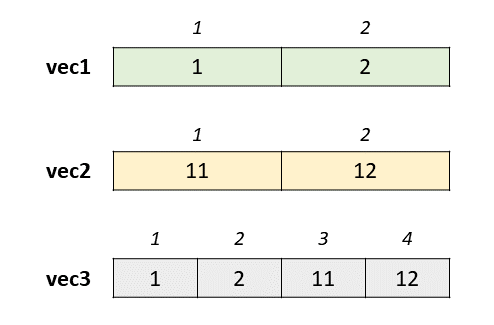
Some more functions create vectors, which we will use in later chapters.
:
The colon operator generates a sequence from the number before : to the number after it, in steps of 1 or -1, as the case may be. Notice that the result is of type integer.
1:25 [1] 1 2 3 4 5 6 7 8 9 10 11 12 13 14 15 16 17 18 19 20 21 22 23 24 2525:30[1] 25 26 27 28 29 3010:1 [1] 10 9 8 7 6 5 4 3 2 1typeof(2:250)[1] "integer"A common mistake with the colon operator is about its precedence. In R, : is evaluated before +, -, * and / (though after ^). So 1:n+1 means (1:n) + 1, and not 1:(n+1). Guess the outputs before running these.
n <- 5
1:n+1[1] 2 3 4 5 61:(n+1)[1] 1 2 3 4 5 61:n*2[1] 2 4 6 8 10seq()
The function seq() generates a sequence like :, but with more control. The step can be given in the argument by, and may be a decimal. Or the number of values wanted can be given in length.out, and R works out the step.
rep()
As the name suggests, rep() is short for repeat. It repeats a value, or a vector, a given number of times.
LETTERS and letters
These are two built-in vectors with the 26 letters of the English alphabet, in upper and lower case respectively.
LETTERS [1] "A" "B" "C" "D" "E" "F" "G" "H" "I" "J" "K" "L" "M" "N" "O" "P" "Q" "R" "S"
[20] "T" "U" "V" "W" "X" "Y" "Z"letters [1] "a" "b" "c" "d" "e" "f" "g" "h" "i" "j" "k" "l" "m" "n" "o" "p" "q" "r" "s"
[20] "t" "u" "v" "w" "x" "y" "z"month.name and month.abb
month.name [1] "January" "February" "March" "April" "May" "June"
[7] "July" "August" "September" "October" "November" "December" month.abb [1] "Jan" "Feb" "Mar" "Apr" "May" "Jun" "Jul" "Aug" "Sep" "Oct" "Nov" "Dec"The elements of a vector can have names. The figure below shows a simple example.
ages <- c(A = 10, B = 20, C = 15)
ages A B C
10 20 15 In audit work, names often label figures by office or scheme, like the expenditure of three divisions in ₹ lakh.
expenditure <- c(Ajmer = 412.5, Bikaner = 298.0, Kota = 356.8)
expenditure Ajmer Bikaner Kota
412.5 298.0 356.8 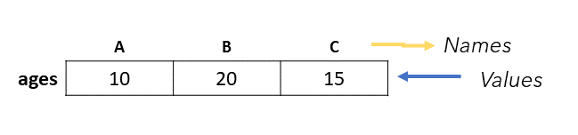
Notice that the names are written here without quotes, just like object names. Also notice that this time R has not printed the index [1], but the names. The function names() shows the names of all the elements. This time they are in quotes, since the names themselves are a character vector.
The same function assigns names to an existing vector.
vec1[1] 1 2 first_element second_element
1 2 Names may also be assigned with setNames(), while creating the vector.
new_vec <- setNames(1:26, LETTERS)
new_vec A B C D E F G H I J K L M N O P Q R S T U V W X Y Z
1 2 3 4 5 6 7 8 9 10 11 12 13 14 15 16 17 18 19 20 21 22 23 24 25 26 The function unname() removes all the names. Assigning NULL to the names, names(x) <- NULL, does the same. Remember that unname() does not change the vector itself. To keep the change, we have to assign the result back to the vector. Check this.
unname(new_vec) [1] 1 2 3 4 5 6 7 8 9 10 11 12 13 14 15 16 17 18 19 20 21 22 23 24 25
[26] 26new_vec A B C D E F G H I J K L M N O P Q R S T U V W X Y Z
1 2 3 4 5 6 7 8 9 10 11 12 13 14 15 16 17 18 19 20 21 22 23 24 25 26 new_vec <- unname(new_vec)
new_vec [1] 1 2 3 4 5 6 7 8 9 10 11 12 13 14 15 16 17 18 19 20 21 22 23 24 25
[26] 26Sometimes values of different types get mixed together, by accident or on purpose. R then converts, or coerces, them to a single type. Let us see how.
But first, how do we check the type of a vector? typeof() tells the type. To check whether a vector is of a particular type, there are the is.*() functions, which return either TRUE or FALSE.
We know that all the values in a vector must be of the same type. So what happens when we mix values of different types in a vector?
R converts all of them to the most flexible type among them. A number like 56 can easily become a complex number (56+0i) or text ("56"), but a letter like A cannot become a number. So the types follow the order of precedence in Table 1.2, and the vector takes the highest-ranked type present.
| Rank | Type |
|---|---|
| 1 | Character |
| 2 | Complex |
| 3 | Double |
| 4 | Integer |
| 5 | Logical |
For example, in the following diagram, the first vector has a character element, the highest rank, so the whole vector becomes character. Similarly, the second and third vectors become double (because of the second element) and integer (because of the first element) respectively.
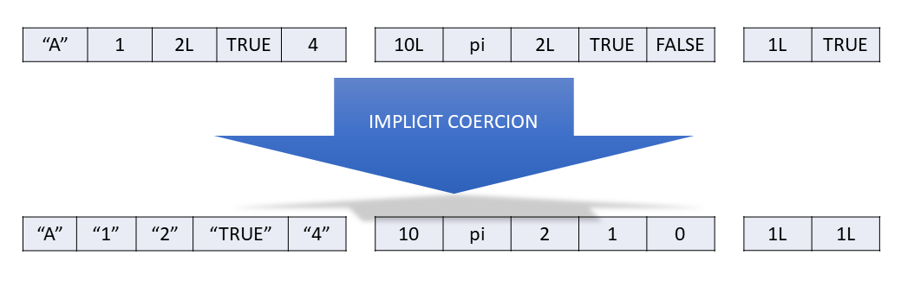
It is important to note that this coercion happens silently, without any warning. It also happens when two or more vectors of different types are joined together.
For example, vec below is a vector of type integer. When we add an element of type character, the whole of vec becomes character.
R also coerces vectors when we calculate with them. TRUE becomes 1 and FALSE becomes 0.
This is very handy. The sum of a logical vector counts the TRUEs, and its mean gives their proportion. We will use this all the time to count exceptions.
The silent coercion to character is a classic trap with data from Excel. If a single cell in a column of amounts holds text, like "1,25,000", "NIL" or "-", the whole column is read as character. Arithmetic on it then fails, or sorting puts "9000" after "85000". So after reading any file, check the type of every column, as we will learn in Section 9.5.
We can coerce explicitly with an as.*() function, like as.logical(), as.integer(), as.double() or as.character(). A value which cannot be converted becomes NA, with a warning.
[1] 1 0as.integer(c(1, 'one', 1L))Warning: NAs introduced by coercion[1] 1 NA 1as.numeric(c("125000", "1,25,000", "NIL"))Warning: NAs introduced by coercion[1] 125000 NA NANever ignore this warning. Each NA it creates is a value which has been dropped from your totals. The function parse_number() from readr, which we will meet in Section 9.5, handles amounts with commas.
Sometimes both kinds of coercion happen together. Which comes first? Implicit coercion always happens first, when the vector is created. Guess the output of this example before looking at the result.
as.logical(c('TRUE', 1))[1] TRUE NAHere is why. The vector c('TRUE', 1) first becomes c('TRUE', '1') by implicit coercion. Then as.logical() converts '1' to NA. The number 1 would have become TRUE, but the text "1" becomes NA.
The function length() tells how many elements a vector has.
A matrix (plural matrices) is a two-dimensional arrangement of values, like a matrix in mathematics. As in vectors, all the values must be of the same type. For example,
\[\begin{array}{ccc} x_{11} & x_{12} & x_{13}\\ x_{21} & x_{22} & x_{23} \end{array}\]
Thus, matrices are vectors with an attribute named dimension.
The dimension attribute is itself an integer vector of length 2 (number of rows, number of columns).
A matrix is created with the function matrix(), from a vector of values, and the number of rows nrow or the number of columns ncol.
matrix(1:12, nrow = 3) [,1] [,2] [,3] [,4]
[1,] 1 4 7 10
[2,] 2 5 8 11
[3,] 3 6 9 12matrix(1:12, ncol=3) [,1] [,2] [,3]
[1,] 1 5 9
[2,] 2 6 10
[3,] 3 7 11
[4,] 4 8 12The values fill the matrix column by column. Another useful argument, byrow , is FALSE by default. If we set it to TRUE, the values fill row by row.
matrix(1:12, ncol=3, byrow = TRUE) [,1] [,2] [,3]
[1,] 1 2 3
[2,] 4 5 6
[3,] 7 8 9
[4,] 10 11 12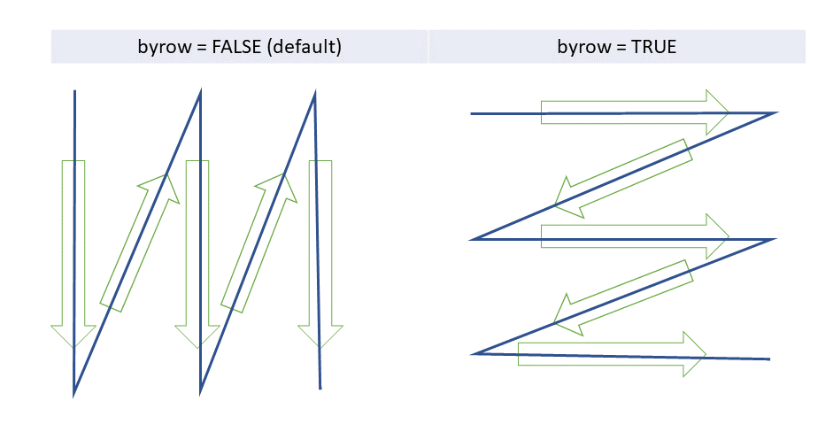
A matrix can be of any type, and the rules of coercion explained for vectors apply here too.
matrix(LETTERS, nrow = 2) [,1] [,2] [,3] [,4] [,5] [,6] [,7] [,8] [,9] [,10] [,11] [,12] [,13]
[1,] "A" "C" "E" "G" "I" "K" "M" "O" "Q" "S" "U" "W" "Y"
[2,] "B" "D" "F" "H" "J" "L" "N" "P" "R" "T" "V" "X" "Z" [,1] [,2] [,3] [,4] [,5] [,6]
[1,] "A" "F" "K" "P" "U" "Z"
[2,] "B" "G" "L" "Q" "V" "1"
[3,] "C" "H" "M" "R" "W" "2"
[4,] "D" "I" "N" "S" "X" "3"
[5,] "E" "J" "O" "T" "Y" "4" Like vectors, the rows and columns of a matrix may have names, given with rownames(), colnames() or the argument dimnames. Check ?matrix for the complete documentation. Here is the quarterly expenditure of three divisions, in ₹ lakh, with named rows and columns.
The dimensions of a matrix are given by dim(), as two numbers, rows first and then columns. It is the matrix’s counterpart of length().
Assigning dimensions to a vector is another way of turning it into a matrix.
What happens when the vector has fewer, or more, values than the matrix needs? R recycles the values, or drops the extra ones, but the result may not be what you wanted. Check these cases, and notice when R warns you.
matrix(1:10, nrow=5, ncol=5)Warning in matrix(1:10, nrow = 5, ncol = 5): data length differs from size of
matrix: [10 != 5 x 5] [,1] [,2] [,3] [,4] [,5]
[1,] 1 6 1 6 1
[2,] 2 7 2 7 2
[3,] 3 8 3 8 3
[4,] 4 9 4 9 4
[5,] 5 10 5 10 5matrix(1:1000, nrow=2, ncol=3)Warning in matrix(1:1000, nrow = 2, ncol = 3): data length [1000] is not a
sub-multiple or multiple of the number of columns [3] [,1] [,2] [,3]
[1,] 1 3 5
[2,] 2 4 6cbind() and rbind() combine matrices side by side (column-wise) or one below the other (row-wise), respectively.
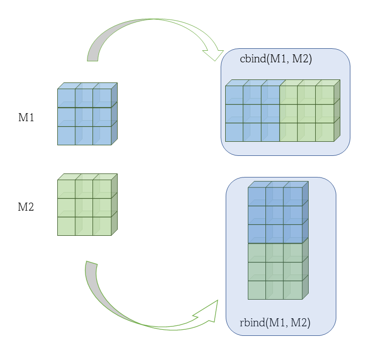
See these two examples. The first joins side by side.
[,1] [,2] [,3] [,4]
[1,] 1 3 5 7
[2,] 2 4 6 8The second joins one below the other.
rbind(mat1, mat2) [,1] [,2]
[1,] 1 3
[2,] 2 4
[3,] 5 7
[4,] 6 8So far we have seen values in one dimension, as vectors, and in two dimensions, as matrices. How many dimensions can we have? Any number, in an object of type array. But they become hard to picture, so we do not discuss them further. Check this, however, for your understanding.
, , 1
[,1] [,2]
[1,] 1 4
[2,] 2 5
[3,] 3 6
, , 2
[,1] [,2]
[1,] 7 10
[2,] 8 11
[3,] 9 12
, , 3
[,1] [,2]
[1,] 13 16
[2,] 14 17
[3,] 15 18
, , 4
[,1] [,2]
[1,] 19 22
[2,] 20 23
[3,] 21 24Try creating 4 or 5 dimensional arrays in your console and see the results.
More about vectors and matrices comes in the next chapter, Chapter 2, where we learn to pick out particular elements. So far, all our objects held values of a single type. What if we want to keep values of different types together, each retaining its type? The answer is in the next section, on heterogeneous objects.
Lists combine elements of different types. A list is created with the function list(). Check this.
list(1, 2, 3, 'My string', TRUE)[[1]]
[1] 1
[[2]]
[1] 2
[[3]]
[1] 3
[[4]]
[1] "My string"
[[5]]
[1] TRUEThe figure below depicts this list.
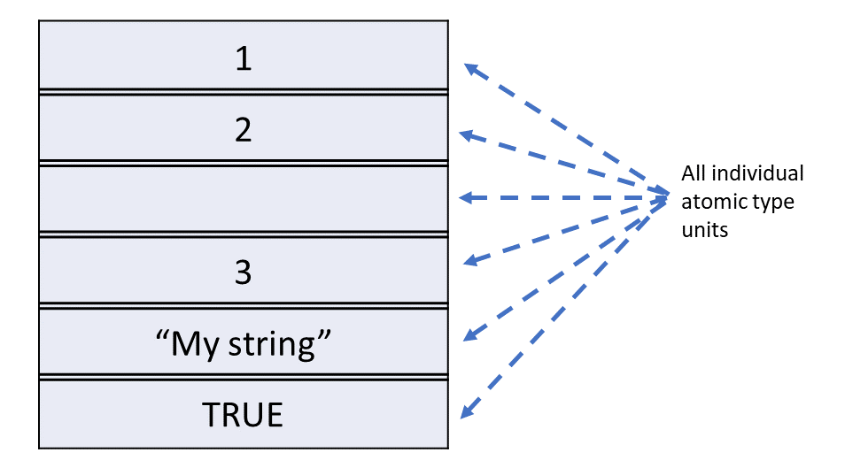
A list can even contain vectors, matrices and arrays as its elements.
list(1:3, LETTERS, TRUE, my_mat2)[[1]]
[1] 1 2 3
[[2]]
[1] "A" "B" "C" "D" "E" "F" "G" "H" "I" "J" "K" "L" "M" "N" "O" "P" "Q" "R" "S"
[20] "T" "U" "V" "W" "X" "Y" "Z"
[[3]]
[1] TRUE
[[4]]
[,1] [,2] [,3] [,4] [,5]
[1,] 1 3 5 7 9
[2,] 2 4 6 8 10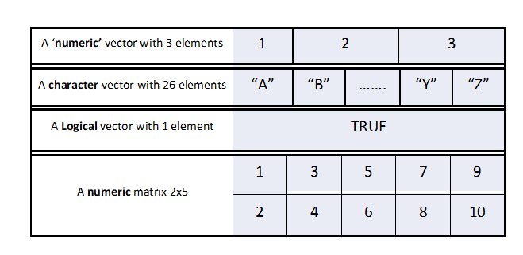
Like vectors, the elements of a list can have names.
list(first_item = 1:5, second_item = my_mat2)$first_item
[1] 1 2 3 4 5
$second_item
[,1] [,2] [,3] [,4] [,5]
[1,] 1 3 5 7 9
[2,] 2 4 6 8 10Or, with a named vector as one of the elements, as in the figure below.
$first
A B C
1 2 3
$second
[,1] [,2] [,3] [,4] [,5]
[1,] 1 3 5 7 9
[2,] 2 4 6 8 10A list is a natural way to keep together the different pieces of one audit observation.
$office
[1] "PWD Division, Kota"
$para_no
[1] 12
$amount_lakh
[1] 18.45
$vouchers
[1] "V-0412" "V-0419" "V-0533"
$settled
[1] FALSE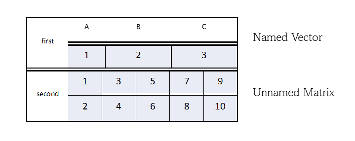
A list can even contain other lists.
my_list2 <- list(my_list, new_item = LETTERS)
my_list2[[1]]
[[1]]$first
A B C
1 2 3
[[1]]$second
[,1] [,2] [,3] [,4] [,5]
[1,] 1 3 5 7 9
[2,] 2 4 6 8 10
$new_item
[1] "A" "B" "C" "D" "E" "F" "G" "H" "I" "J" "K" "L" "M" "N" "O" "P" "Q" "R" "S"
[20] "T" "U" "V" "W" "X" "Y" "Z"The number of items at the first level is given by length(), as for vectors. We will see how to look at the deeper levels in later chapters.
Data frames store tabular (rectangular) data in R, with rows and columns, like a sheet in Excel. They are the object we will work with most.
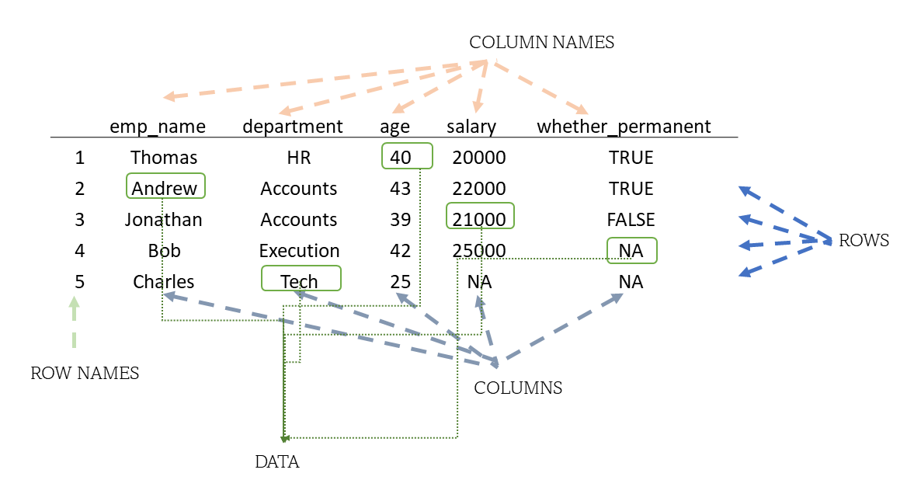
A data frame is a special kind of list, in which every element has the same length. Each element is a column, and the common length is the number of rows.
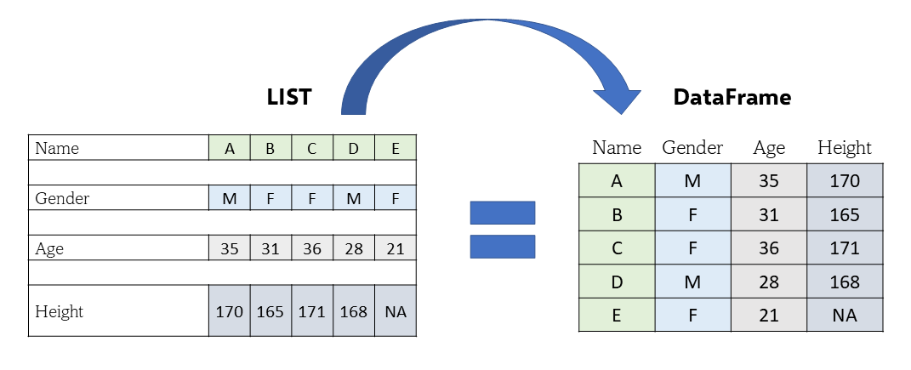
Unlike a matrix, a data frame can have columns of different types. Within a column, though, all the values are of one type, since each column is a vector.
To create a data frame from scratch, we use the function data.frame(). Here is a small extract of a pay register.
emp_name department age salary whether_permanent
1 Ramesh HR 40 20000 TRUE
2 Sunita Accounts 43 22000 TRUE
3 Imran Accounts 39 21000 FALSE
4 Harpreet Execution 42 25000 NA
5 Lakshmi Tech 25 NA NANotice that R has given each row a number as its row name. Notice also the NA in salary. Lakshmi’s salary is missing, and an auditor would want to know why.
Most of the time, of course, we will read data frames from files, which we will learn in later chapters. The dimensions of a data frame are given by dim(), as for a matrix, and the structure, with the type of each column, by str().
dim(my_df)[1] 5 5str(my_df)'data.frame': 5 obs. of 5 variables:
$ emp_name : chr "Ramesh" "Sunita" "Imran" "Harpreet" ...
$ department : chr "HR" "Accounts" "Accounts" "Execution" ...
$ age : num 40 43 39 42 25
$ salary : num 20000 22000 21000 25000 NA
$ whether_permanent: logi TRUE TRUE FALSE NA NALater in the book we will mostly use tibbles, a modern form of the data frame from the tidyverse. They behave the same way, but print more neatly, showing the type of each column.
The main types of objects in R can be depicted as in the figure below.
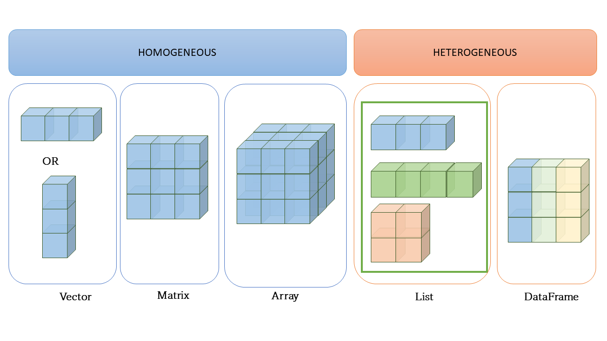
There are other data types in R, of which three are particularly useful in audit. They are factor, Date and date-time. They are built on top of the basic types, integer, double and double respectively, which is why we discuss them separately. They are S3 objects, part of R’s system of object oriented programming, which is beyond our scope here.
To understand them, we need to know that objects can carry attributes, extra information attached to them. For simplicity, think of vectors.
For example, one attribute of a vector is names, which is empty (NULL) for an unnamed vector. All the attributes of an object are shown by the function attributes().
# Let us create a vector
vec <- 1:26
# Convert this to a named vector using the function setNames()
# The first argument is the vector
# The second is a character vector of the same length
vec <- setNames(vec, LETTERS)
# Let us check the attributes of `vec`
attributes(vec)$names
[1] "A" "B" "C" "D" "E" "F" "G" "H" "I" "J" "K" "L" "M" "N" "O" "P" "Q" "R" "S"
[20] "T" "U" "V" "W" "X" "Y" "Z"With attr() we can assign a new attribute to any object.
# Let us assign a new attribute `x`, with the value "New Attribute", to `vec`
attr(vec, "x") <- "New Attribute"
# Now let us check its attributes again
attributes(vec)$names
[1] "A" "B" "C" "D" "E" "F" "G" "H" "I" "J" "K" "L" "M" "N" "O" "P" "Q" "R" "S"
[20] "T" "U" "V" "W" "X" "Y" "Z"
$x
[1] "New Attribute"We can see how a new attribute has been added to the vector. A factor or a date is simply a vector with particular attributes, as we will now see.
A factor is a vector that can contain only predefined values. It is used for categorical data, like the category of a district or the status of a bill. Factors are built on top of an integer vector with two attributes. The first is a class, factor, which makes it behave differently from ordinary integers. The second is levels, the set of allowed values. Factors are created with the function factor().
[1] a b c a
Levels: a b ctypeof(fac) # notice its output[1] "integer"attributes(fac)$levels
[1] "a" "b" "c"
$class
[1] "factor"So if typeof() of a factor says integer, how do we know it is a factor? We use class() or is.factor().
A factor can also be ordered, when its categories have a natural order. The risk rating of the auditable units of a department is a good example. We give the argument ordered = TRUE, along with the levels in their order.
[1] M M H L M
Levels: L < M < His.ordered(my_factor)[1] TRUEmy_factor > "L" # units rated above low risk[1] TRUE TRUE TRUE FALSE TRUEThe argument labels gives labels to display, which may be different from the levels.
[1] Medium Medium High Low Medium
Levels: Low < Medium < HighThe function levels() shows the levels, and can also change them.
levels(my_factor)[1] "Low" "Medium" "High" [1] Medium risk Medium risk High risk Low risk Medium risk
Levels: Low risk < Medium risk < High riskRemember that while factors look like character vectors, and often behave like them, they are built on top of integers. Try to guess the output of is.factor(c(my_factor, "Low risk")) before running it in your console.
We will learn about these data types in detail in Chapter 24.
Dates are built on top of doubles, the number of days since 1 January 1970. They have the class Date and no other attributes. A common way to create dates is to convert text with as.Date(). Note the capital D.
my_date <- as.Date("1970-01-31")
my_date[1] "1970-01-31"attributes(my_date)$class
[1] "Date"unclass(my_date) # the number underneath[1] 30Because a date is a number underneath, we can subtract one date from another, to get the days taken to pay a bill. We can also add days to a date, to get a due date.
Time difference of 52 daysbill_date + 30 # due date, if bills are to be paid within 30 days[1] "2024-12-18"Do check the other arguments of as.Date() by running ?as.Date in your console. To check whether an object is a date, base R has no function like is.Date(), so we use inherits(). (The package lubridate does have is.Date().)
inherits(my_date, 'Date')[1] TRUEPOSIXct)Date-times are represented by the class POSIXct or POSIXlt.
POSIXct is just a large number underneath, the seconds since the start of 1970. It is the class to use for date-times stored in a data frame.POSIXlt is a list underneath, which stores the parts separately, like the day of the week, the day of the year, the month and the day of the month.difftime)Durations, the amount of time between two dates or date-times, are stored as difftime objects. They are built on top of doubles, and have a units attribute, which tells how the number is to be read, as days, hours, and so on.
two_days <- as.difftime(2, units = 'days')
two_daysTime difference of 2 daysWe will discuss dates and times in detail in Chapter 16.
Let us bring the chapter together. A divisional office has sent its bill register for a quarter as an Excel sheet. Some cells of the amount column hold text like "1,25,000" and "NIL", and the bank account numbers were typed into Excel as numbers. When such a sheet is read, the amounts arrive as text and the account numbers as numbers. The code below builds a small register in that state. We will learn to read real files in Chapter 9.
bills <- data.frame(
bill_no = c("B-101", "B-102", "B-103", "B-104", "B-105", "B-106", "B-107", "B-108"),
vendor = c("Shree Ganesh Traders", "Kumar Electricals", "Shree Ganesh Traders",
"Verma Stationers", "Kumar Electricals", "Patel Builders",
"Verma Stationers", "Patel Builders"),
account_no = c(4512378901, 7700123456, 4512378901, 2219876543,
7700123456, 931245678012, 2219876543, 931245678012),
amount = c("48000", "1,25,000", "9850", "NIL", "62,400", "300000", "7425.50", NA),
bill_date = c("2024-10-03", "2024-10-11", "2024-10-25", "2024-11-02",
"2024-11-14", "2024-11-29", "2024-12-06", "2024-12-20"),
paid_date = c("2024-10-15", "2024-12-20", "2024-11-04", "2024-11-12",
"2024-11-21", "2025-01-27", "2024-12-13", "2024-12-31")
)bills bill_no vendor account_no amount bill_date paid_date
1 B-101 Shree Ganesh Traders 4512378901 48000 2024-10-03 2024-10-15
2 B-102 Kumar Electricals 7700123456 1,25,000 2024-10-11 2024-12-20
3 B-103 Shree Ganesh Traders 4512378901 9850 2024-10-25 2024-11-04
4 B-104 Verma Stationers 2219876543 NIL 2024-11-02 2024-11-12
5 B-105 Kumar Electricals 7700123456 62,400 2024-11-14 2024-11-21
6 B-106 Patel Builders 931245678012 300000 2024-11-29 2025-01-27
7 B-107 Verma Stationers 2219876543 7425.50 2024-12-06 2024-12-13
8 B-108 Patel Builders 931245678012 <NA> 2024-12-20 2024-12-31str(bills)'data.frame': 8 obs. of 6 variables:
$ bill_no : chr "B-101" "B-102" "B-103" "B-104" ...
$ vendor : chr "Shree Ganesh Traders" "Kumar Electricals" "Shree Ganesh Traders" "Verma Stationers" ...
$ account_no: num 4.51e+09 7.70e+09 4.51e+09 2.22e+09 7.70e+09 ...
$ amount : chr "48000" "1,25,000" "9850" "NIL" ...
$ bill_date : chr "2024-10-03" "2024-10-11" "2024-10-25" "2024-11-02" ...
$ paid_date : chr "2024-10-15" "2024-12-20" "2024-11-04" "2024-11-12" ...str() tells the story at once. The amounts are chr, that is, text. The account numbers are num, and the dates are text too. Let us try to total the amounts.
sum(bills$amount)Error in `sum()`:
! invalid 'type' (character) of argumentR refuses, because text cannot be added. Converting with as.numeric() turns every value it cannot read into NA, with a warning.
as.numeric(bills$amount)Warning: NAs introduced by coercion[1] 48000.0 NA 9850.0 NA NA 300000.0 7425.5 NAThe amounts with commas have been lost along with "NIL". The commas are only formatting, so we remove them first. The function gsub() replaces every comma with nothing. We meet it properly in Chapter 4.
amount <- as.numeric(gsub(",", "", bills$amount))Warning: NAs introduced by coercionamount[1] 48000.0 125000.0 9850.0 NA 62400.0 300000.0 7425.5 NAOnly "NIL" now gives a warning, and the one bill with an empty cell stays NA. The total is still NA until we decide what to do with these two.
sum(amount)[1] NA[1] 2bills$bill_no[is.na(amount)][1] "B-104" "B-108"sum(amount, na.rm = TRUE)[1] 552675.5Of the 8 bills, 2 have no usable amount. The other bills add up to ₹5.53 lakh. We report the total with the note that 2 bills could not be valued, and ask the office what “NIL” and the blank cell mean. A bill entered as nil but paid would be a finding.
Next, round sums. The remainder on division by 1,000 picks them out.
So 3 of the bills are exact multiples of ₹1,000. This is not wrong in itself, but such bills are worth matching with the supporting invoices.
Now the account numbers. The vendor master keeps them as text, and Patel Builders’ account starts with a zero. The bill register, read as numbers, has lost that zero, so the two will never match.
master_account <- c("Patel Builders" = "0931245678012")
bills$account_no[bills$vendor == "Patel Builders"][1] 931245678012 931245678012as.character(bills$account_no[bills$vendor == "Patel Builders"]) == master_account[1] FALSE FALSEnchar(master_account)Patel Builders
13 The master has 13 characters, the register only 12. The fix is to read such columns as text in the first place, as we will learn in Section 9.5.
Last, the days taken to pay. We convert the date text with as.Date() and subtract.
Time differences in days
[1] 12 70 10 10 7 59 7 11bills$bill_no[days_to_pay > 30][1] "B-102" "B-106"Bills B-102 and B-106 took more than 30 days to pay. If the rules require payment within 30 days, the auditor would ask the office for the reasons, and check whether any interest on delayed payment was claimed by the vendor.
In a few lines we have found missing amounts, round sums, a mismatched account and delayed payments. Every one of these came from knowing the type of each value.
Before any analysis of a data file, run str() and write down, in a comment, the expected type of every column. Any column that does not match is the first thing to examine. It is often a finding about the quality of the office’s records.
When a file of payments or bills is first loaded into R, an auditor may follow these steps.
bills_2024_25, using <-.str() and dim(). Confirm the number of rows and the type of each column."NIL" or "1,25,000", in some cell. Find it before doing any arithmetic.gsub() before as.numeric().as.numeric() or another as.*() function, read every warning. Each new NA is a value dropped from your totals.NA, use is.na() to see which values are missing and why. Only then decide on na.rm = TRUE.round(x, 2) before matching a bill total with the sum of its items. Do not compare computed decimals with ==.as.Date(), so that the days taken to pay a bill can be worked out by subtraction.NA gives a wrong result without any error.str() before you analyse it.na.rm = TRUE.| Function | Package | What it does |
|---|---|---|
<- |
base R | Assign a value to a name |
typeof(), class(), str()
|
base R | Type, class and structure of an object |
is.*(), like is.numeric(), is.character(), is.na()
|
base R | Check the type of an object, or for missing values |
as.*(), like as.numeric(), as.character()
|
base R | Convert to another type, giving NA for what cannot be converted |
c(), vector()
|
base R | Create a vector |
:, seq(), rep()
|
base R | Create sequences and repeated values |
LETTERS, letters, month.name, month.abb
|
base R | Built-in vectors of letters and month names |
names(), setNames(), unname()
|
base R | Get, set or remove names |
length(), dim()
|
base R | Number of elements, or rows and columns |
matrix(), array(), cbind(), rbind()
|
base R | Create and combine matrices and arrays |
list(), data.frame()
|
base R | Create lists and data frames |
attributes(), attr()
|
base R | See or set the attributes of an object |
factor(), levels()
|
base R | Create factors and see their levels |
as.Date(), Sys.time(), as.difftime()
|
base R | Dates, date-times and durations |
all.equal(), round()
|
base R | Compare decimals safely |
%%, %/%
|
base R | Remainder and whole-number division, for example to spot round sums |
sum(), which()
|
base R | Total a vector, count TRUE values, and find their positions |
gsub() |
base R | Replace text, here to remove the commas in amounts |
nchar() |
base R | Number of characters in a string |
unclass(), inherits(), is.factor(), is.ordered()
|
base R | Look under a class, and check what class an object has |
cat() |
base R | Print text without the index [1]
|
R Core Team, R: A Language and Environment for Statistical Computing (Vienna, Austria: R Foundation for Statistical Computing, 2025), https://www.R-project.org/.↩︎
Single and double quotes can be used interchangeably, and make no difference to the object created. The only thing to remember is that a string must be closed with the same quote it was opened with. This also lets us put one kind of quote inside a string enclosed by the other, as in the first example below.↩︎